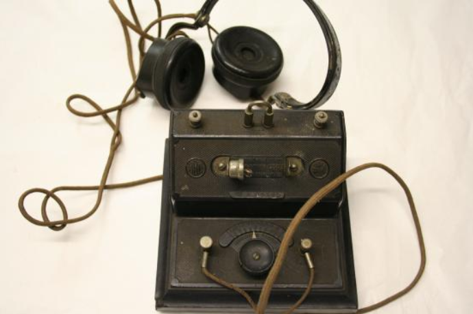
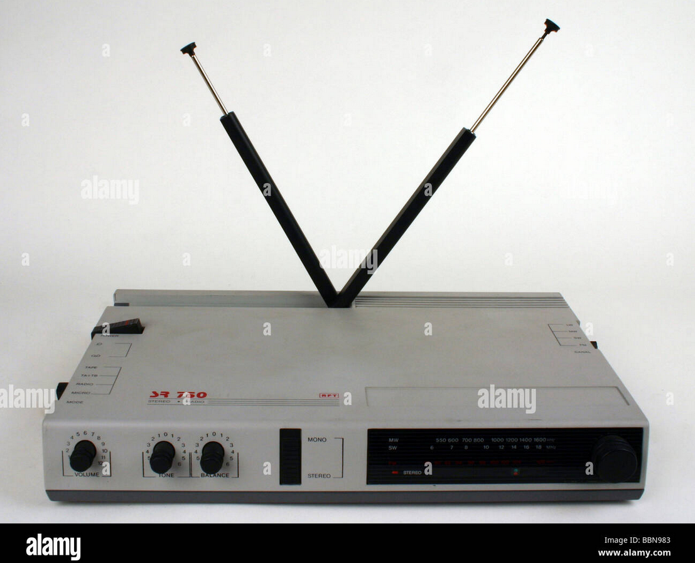
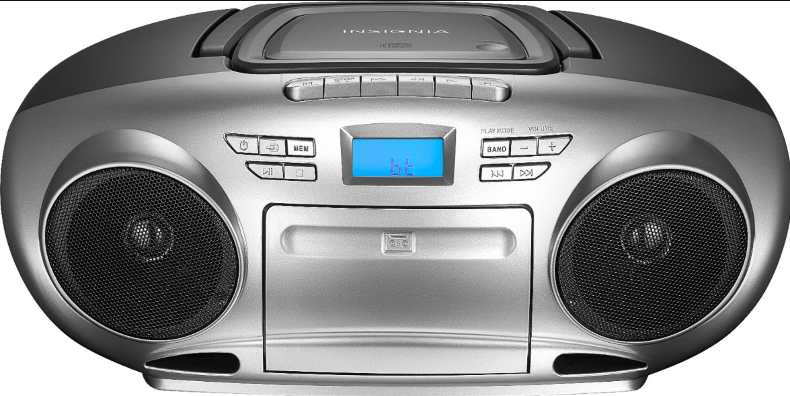
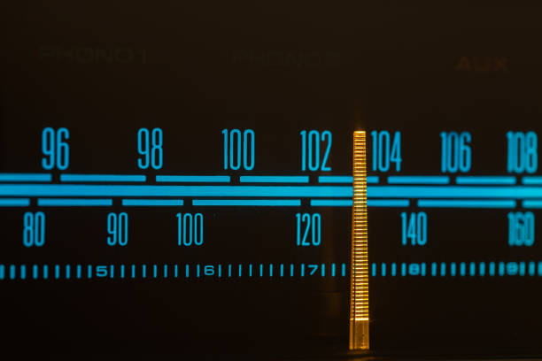
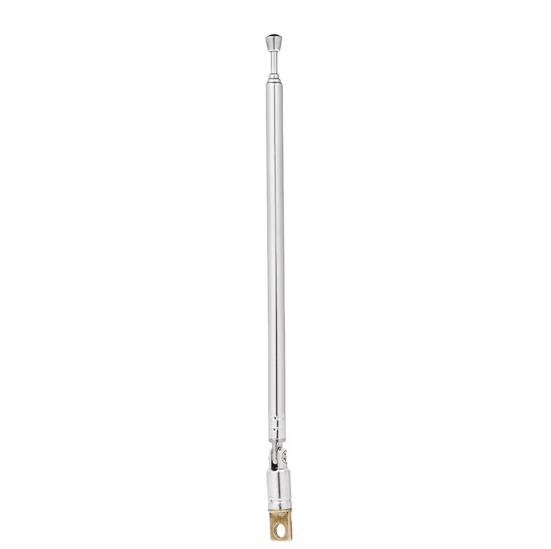
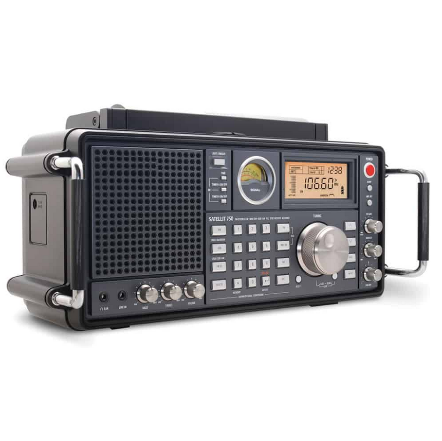
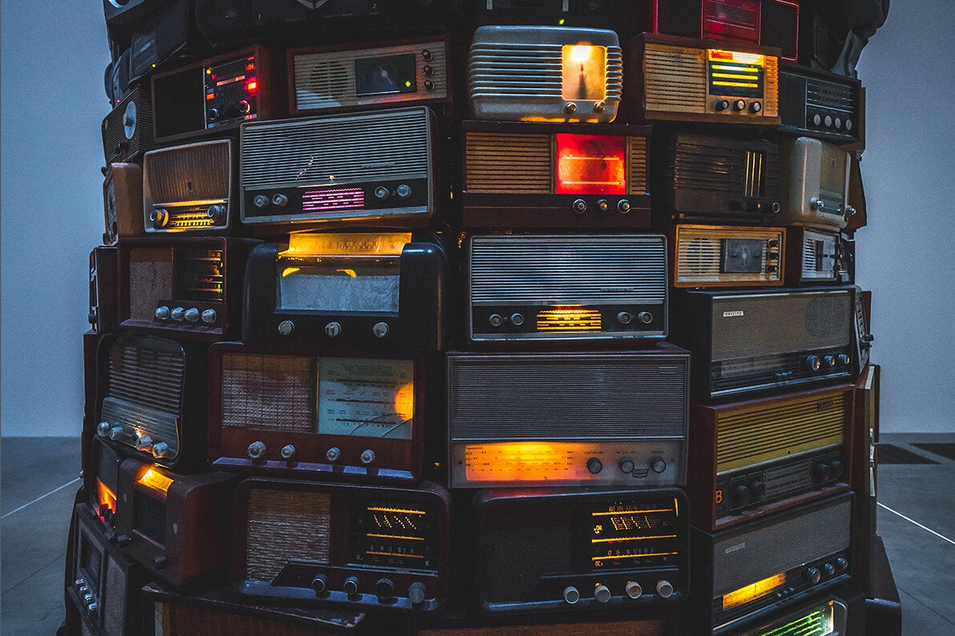

Skip to main content
RadioHobbyists!
Home
Types of Radiostations
Radio Equipment
Just as there are multiple ways of broadcasting, there are multiple ways of listening to radio varying from cheap to expensive.
      